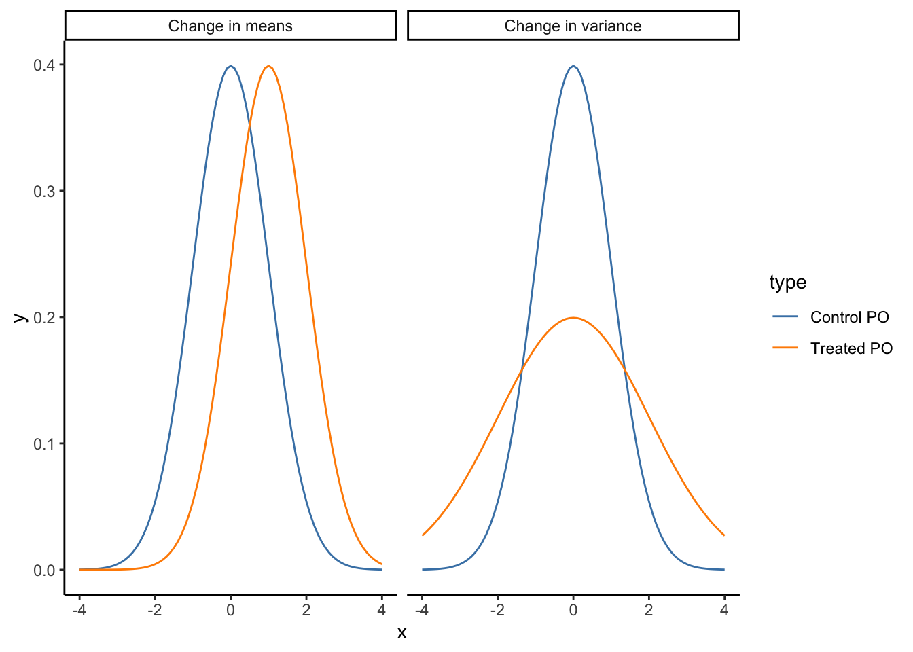

Practice graphically showing our beliefs about data-generating processes using causal graphs
Expand our worldview by exploring interesting questions in domains that we don’t normally think about
Build a trusting intellectual community by being curious about each other’s interests, giving kind and actionable feedback, and receiving feedback with curiosity and gratitude
Review
Identification
Identification is the process of isolating only desired variation (variation corresponding purely to our causal effect of interest) and ruling out alternate explanations
Ruling out alternate explanations requires understanding the data-generating process
Causal diagrams
A causal diagram (causal graph) is a visual representation of a data-generating process and are directed acyclic graphs (DAGs).
Nodes represent variables and edges represent direct causal relationships between variables.
We will be conceptualizing causality in the following way: A is a cause of Y if changes in the value of A change the probability distribution of Y.
Note 1: In practice, people in the field say that the presence of an arrow indicates that A might cause Y.
Note 2: If changes in the value of A change the value of Y, we often equate this with a change in mean, but it doesn’t have to. (e.g., the mean might not change, but the variance could)
Code
dat <-bind_rows(tibble(x =seq(-4, 4, by =0.1),y =dnorm(x, 0, 1),type ="Control PO",context ="Change in means" ),tibble(x =seq(-4, 4, by =0.1),y =dnorm(x, 1, 1),type ="Treated PO",context ="Change in means" ),tibble(x =seq(-4, 4, by =0.1),y =dnorm(x, 0, 1),type ="Control PO",context ="Change in variance" ),tibble(x =seq(-4, 4, by =0.1),y =dnorm(x, 0, 2),type ="Treated PO",context ="Change in variance" ))ggplot(dat, aes(x = x, y = y, color = type)) +geom_line() +facet_grid(~ context) +theme_classic() +scale_color_manual(values =c("steelblue", "darkorange"))

Warm-up 1
We’re interested in the question “Does reading Harry Potter as a child make you read more as an adult?” A causal diagram is shown below.
What direct effects should be included when trying to answer your research question of interest?
What indirect effects should be included when trying to answer your research question of interest?
What is a likely alternative explanation of why we might see a relationship between reading Harry Potter and reading more as an adult?
LikesReading is included as an unobserved variable. Why do we bother to include variables on our diagrams if we can’t observe them? Why might we think that LikesReading is an unobserved or latent variable?
Warm-up 2
The diagram below depicts a cyclical relationship between workplace culture and satisfaction. If employees perceive a more positive workplace culture, their satisfaction at work goes up, and if their satisfaction goes up, they contribute more to a positive workplace culture. Change the diagram so that the relationship is no longer cyclic.
Do you think it’s a stronger assumption to include an arrow or exclude an arrow on a causal diagram?
Simplifying causal diagrams
The world is very complex, and causal diagrams can get very complex too.
Simplifying causal diagrams is important for identification: focusing on alternate explanations of consequence.
Simplifying is also important for sharing the diagram with diverse experts to get good feedback.
We can use a few techniques to simplify causal diagrams:
Unimportance
Variables that have small effects on all other variables in the diagram and edges with small effects can likely be omitted safely.
e.g., Living near a quiet cafe affects online course taking
Redundancy
Variables that have the same arrows going in and coming out can be grouped together.
e.g., Demographic variables like age and race and socioeconomic variables like years of school and years of work experience often have arrows pointing to the outcome and to treatment.
Caveat: Having “Demographic Factors” and “Socioeconomic Factors” nodes can simplify the presentation of the causal diagram, but we really do need to know all the individual variables inside these broad categories to accurately estimate causal effects because each variable represents a different alternate explanation.
Get rid of mediators
In situations like A -> B -> C with no other arrows into or out of B, we can likely omit B safely.
Caveat: In an area called mediation analysis (which aims to estimate the direct and indirect components of an overall causal effect), explicitly including mediators and paying careful attention to how mediators are related to other variables is very important.
Irrelevance
If a variable isn’t on any path between the treatment and outcome, we can likely safely omit the variable.
We’ll talk more about the rationale for this in the next classes.
Drawing causal diagrams with DAGitty
DAGitty is an online tool (with an associated R package) for drawing causal diagrams. Click the “Launch” link to open a web tool.
Model > New Model: clear the screen
Add a node: Click on the gray canvas
Add an edge: First click on the variable representing the cause, then the variable representing the effect (arrow points to second node clicked)
Delete a node: Click a node and hit “D”. (Or expand the “Variable” toggle in the top left and check “exposure”.)
Delete an edge: First click the variable representing the cause, then the variable representing the effect.
Label a node as the treatment (exposure): Click a node and hit “E”. (Or expand the “Variable” toggle in the top left and check “exposure”.)
Label a node as the outcome: Click a node and hit “O”. (Or expand the “Variable” toggle in the top left and check “outcome”.)
Exercises
Record your research question in this sheet so that we can form pairs for the second exercise.
Exercise 1
For your research question, sketch the possible data-generating process using a causal diagram (on paper or with DAGitty):
Clearly indicate the cause of interest and the outcome.
Write down other variables are at play in this situation. Include these variables as nodes.
Add edges depicting direct causal relationships between variables.
Indicate which variables are latent or unobserved.
Indicate which variables might be harder to collect (reliable) data on.
Exercise 2
You and your partner will take turns presenting your research question and causal diagram and working together to simplify the diagram.
Pick one person to go first, and go through the following 2 steps. Switch when you’re done.
Step 1: Present your research question and causal diagram, making sure to explain any context needed to understand:
The variables in the diagram
The edges in and absent from the diagram
Which paths are part of the causal effect of interest
The listener should ask clarifying questions as necessary.
Step 2: Together, work through attempting to simplify the presenter’s diagram by going through the following 4 principles:
Unimportance
Redundancy
Mediators
Irrelevance
Make note of what was changed and what you’re still unsure about. If you came across a good example of one of these principles, draw it on the board to share with the class during our end-of-class debrief.